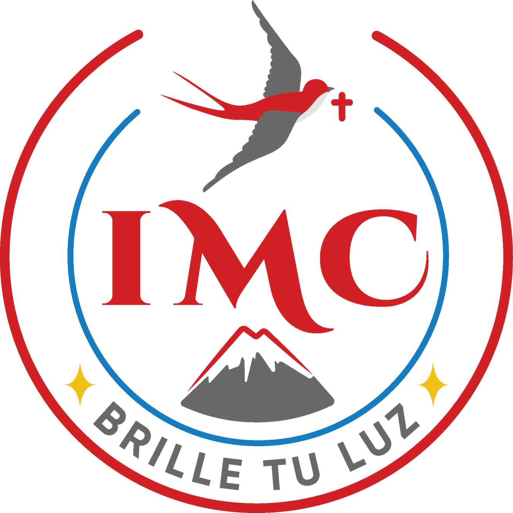

Inicio

Los temas abordados en este sitio web se enfocan al contenido de estudios en el área de Informática y TIC considerando el plan de formación de la Dirección General de Bachillerato (DGB)
a la que pertenece el Bachillerato Instituto de la Vera Cruz.
El propósito del sitio es educativo, pues es un producto para el evaluar el contenido de la asignatura de Formación para el Trabajo
con énfasis en TIC, cuya docente titular es MTI. Alejandra López Núñez. Su creación y el diseño es responsabilidad de Rebecca Elias Ricardez y Santiago Hernández Torres alumnos de dicho instituto y a ellos pertenecen
los derechos sobre el diseño y presentación del contenido el cual, está debidamente referenciado, respetando así, los derechos del o los autores de las fuentes primarias consultadas.En la sección
de CRÉDITOS que se anexa a este sitio, se puede consultar la licencia para utilizar el material y el contenido que se presenta.